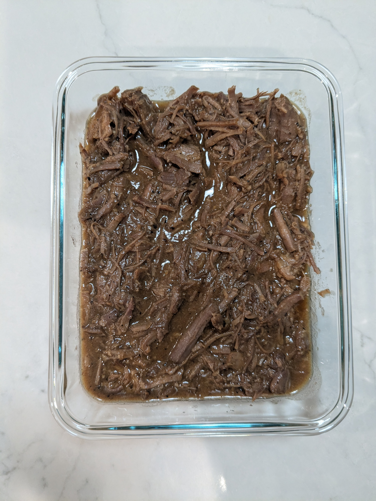

Barbacoa

Ingredients
- 3-5 lb chuck roast, cut into large pieces
- 3-4 tbs neutral oil
- 2 bay leaves
- 1-2 jalapeños, cut in half
- 1 onion, chopped
- 1 shallot, chopped
- 3 cloves garlic, whole
- 2 C beef stock
- ½ tbs salt
- 1 tsp black pepper
- 2 tsp onion powder
- 2 tsp garlic powder
- 1 tbs chili powder
- 1 tsp smoked paprika
- 1 tsp oregano
- 1 tsp cumin
- 2-3 tbs brown sugar
Directions
- Prep: Mix seasoning in a small bowl. Preheat oven to 400°F.
- Season Meat: Pat chuck roast dry, coat with 1 tbs oil, and season all sides.
- Sear: Heat 2 tbs oil in an oven-safe pan over medium-high. Sear roast 3-5 minutes per side and 1-2 minutes on edges. Work in batches to keep pan hot.
- Deglaze & Veggies: Remove meat. Add onions, shallots, garlic, and ¼ C stock to deglaze. Cook 3-4 minutes to soften the vegetables and develop the pan sauce.
- Build Braise: Return meat with drippings, add remaining stock, bay leaves, and nestle the jalapeños into the stock.
- Roast: Place uncovered in oven for 20 minutes, flip meat, roast another 20 minutes uncovered.
- Slow Cook: Cover pan and reduce oven to 250°F. Cook 4-5 hours, checking every hour or so.
- Finish: Shred meat, discard large fat bits. Blend juices and vegetables, return sauce to pan, adjust seasoning, add shredded meat, and heat through.
Chef's Notes
- Serve with corn tortillas, salsa, limes, chopped onions, and cilantro
- Montreal Seasoning (salt, pepper, garlic, onion) works well; use about 2-3 tablespoons.
- During cooking, liquids will reduce and can make the sauce too salty. If that happens, add brown sugar gradually until the flavor balances to your liking.
- If the roast doesn't sizzle when placed in the pan, remove it and heat the pan for 1-2 more minutes before trying again. Proper searing creates fond (the browned bits) in the pot, which is essential for developing rich flavor
- Cachetes (beef cheek) and lengua (beef tongue) are authentic choices, but they can be hard to find.
The Gumbo Page
Michael Fritsche
mbf@fritsche.org